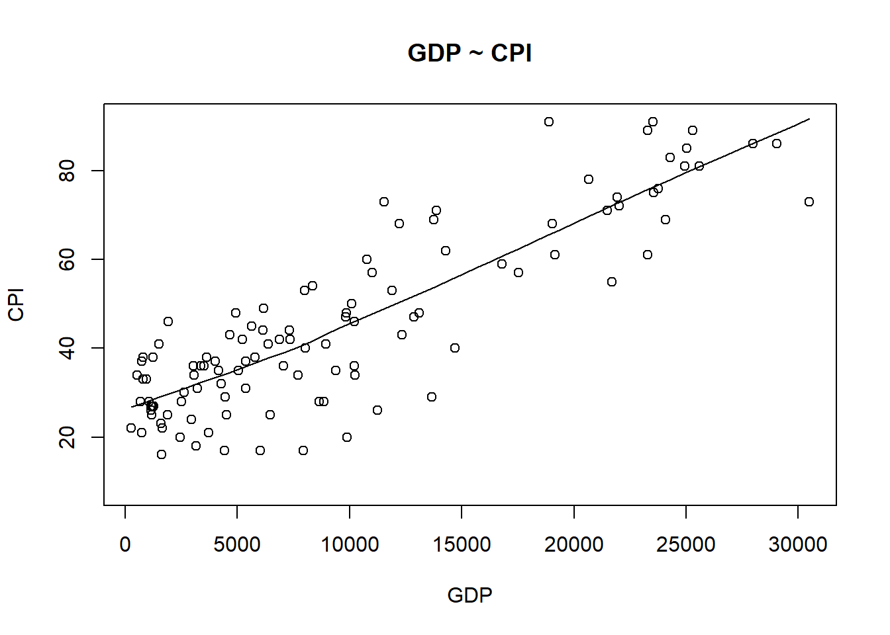
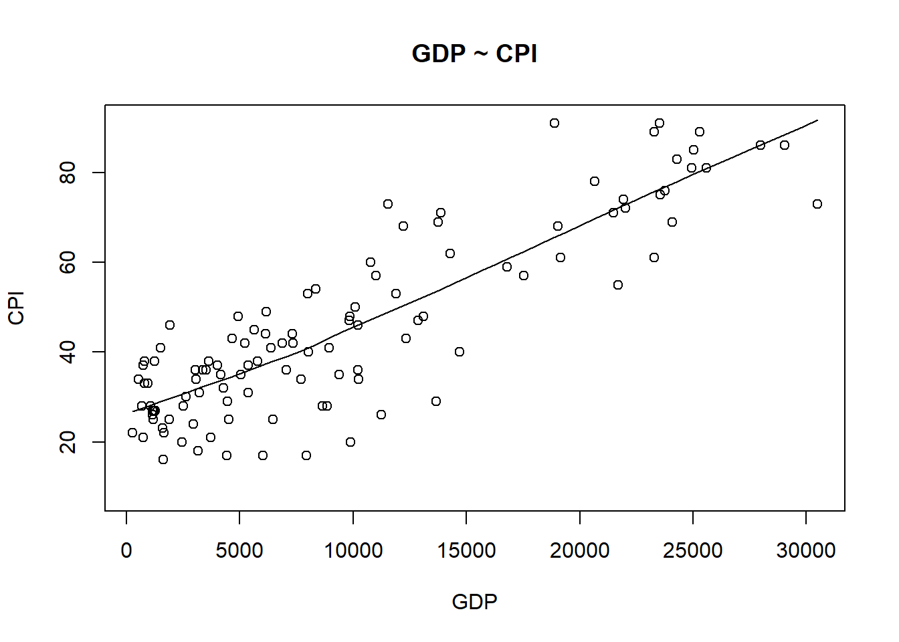
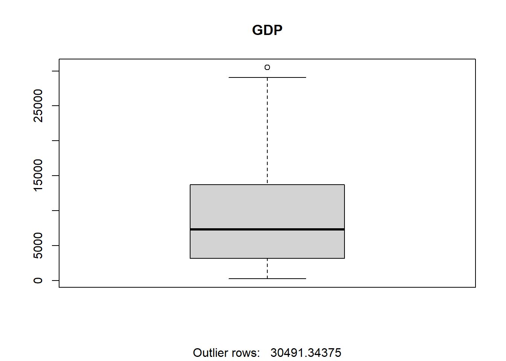
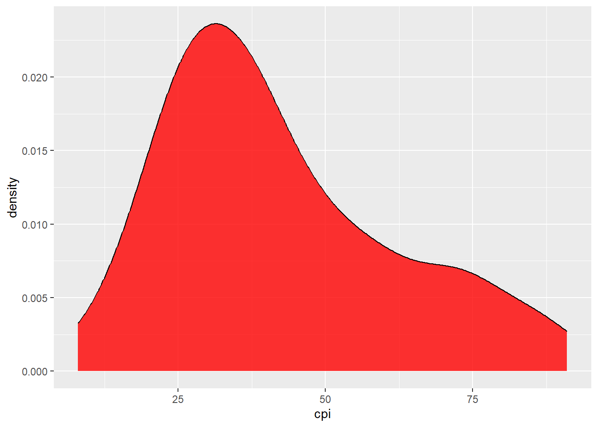
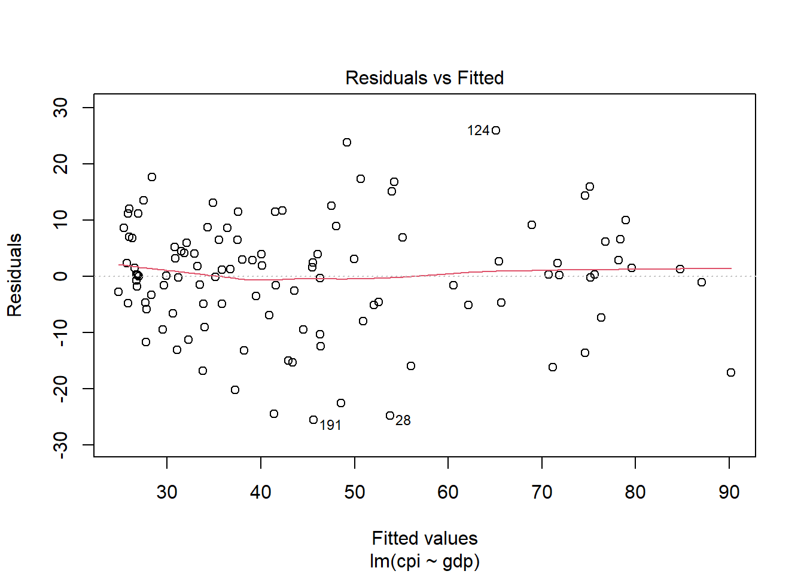
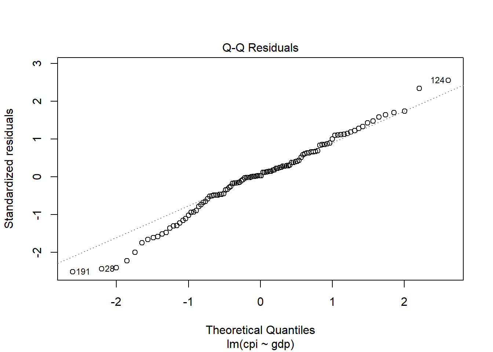
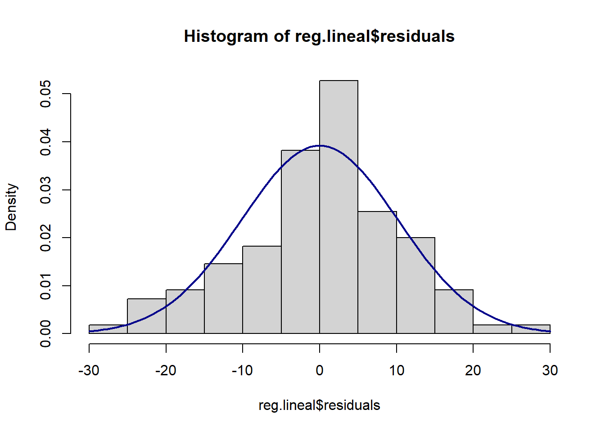
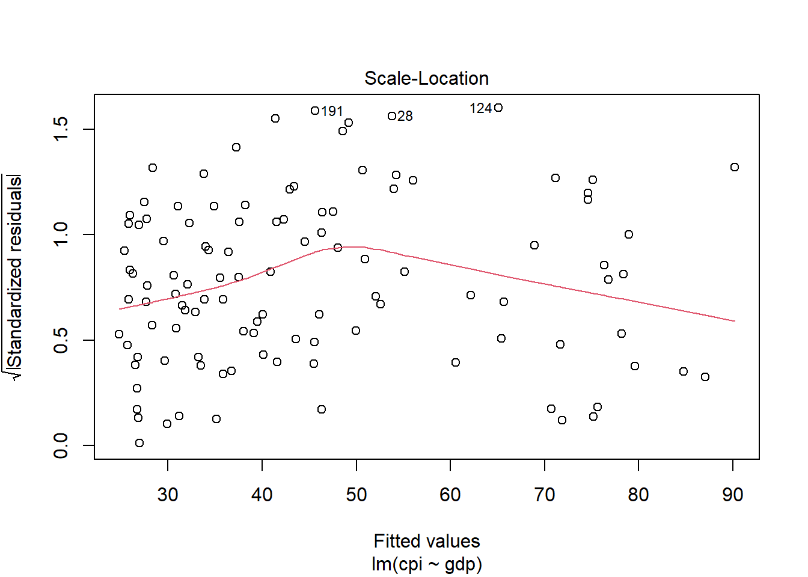
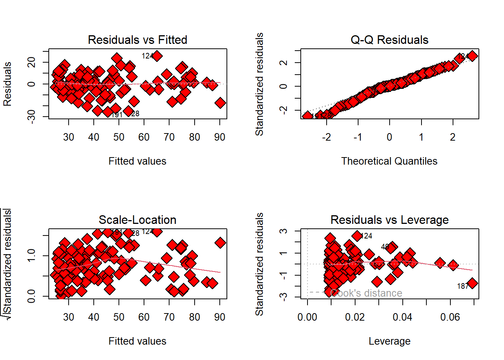

scatter.smooth(x=datos_reg$gdp, y=datos_reg$cpi, main="GDP ~ CPI", xlab="GDP", ylab="CPI")
La regresión lineal se usa para predecir el valor de una variable y en función de una o más variables x. La variable dependiente debe ser numérica, y las independientes pueden ser tanto numéricas como categóricas. En el ejemplo usado, se tratará de comprobar si el Índice de Corrupción de un país (y) depende del nivel de PIB de este (x).
# Análisis preliminar:
scatter.smooth(x=datos_reg$var1, y=datos_reg$var2) #Gráfico de dispersión
boxplot(datos_reg$var1, sub=paste("Outlier rows: ", boxplot.stats(datos_reg$var1)$out)) #Boxplot para buscar datos atípicos
ggplot(datos_reg, aes(var1)) + geom_density(fill="red", alpha=0.8) #Diagrama de densidad (librería ggplot)
# Función de la regresión
regresión <- lm(var1~var2, datos_reg) #Librería e1071
summary(regresión)
# Comprobación de los supuestos principales
plot(regresión,2) #Normalidad de los residuos
bptest(regresión) #Homocedasticidad (librería lmtest)
vif(regresión) #Multicolinealidad (librería rms)
#Exportar los resultados
stargazer(regresión, type="text") #Librería stargazerAntes de estimar la regresión, es importante explorar y entender la variable dependiente (fenómeno que queremos explicar).
scatter.smooth(x=datos_reg$gdp, y=datos_reg$cpi, main="GDP ~ CPI", xlab="GDP", ylab="CPI")
boxplot(datos_reg$gdp, main="GDP", sub=paste("Outlier rows: ", boxplot.stats(datos_reg$gdp)$out)) 
# Seleccionamos el nombre del país cuyo GDP es igual a 30491.34375
outlier_gdp <- datos_reg %>%
filter(gdp == 30491.34375) %>%
pull(cname)
table(outlier_gdp)outlier_gdp
United States
1 ggplot(datos_reg, aes(cpi)) + geom_density(fill="red", alpha=0.8)
La función utilizada para construir modelos lineales es lm() del paquete e1071, que toma dos argumentos principales: lm(var_dependiente ~ var_independiente, datos)
library(e1071)
reg.lineal <- lm(cpi~gdp, data=datos_reg) #El argumento "data=" se puede omitir, basta con poner la base de datos. Es decir, se puede escribir directamente: lm(cpi~gdp, datos_reg)
reg.lineal #Conviene guardar las regresiones dentro de un objeto, ya que de otra forma no se podrían realizar los pasos posteriores.
Call:
lm(formula = cpi ~ gdp, data = datos_reg)
Coefficients:
(Intercept) gdp
24.237839 0.002163 Para evaluar los resultados, imprimimos las estadísticas de resumen para el modelo:
summary(reg.lineal)
Call:
lm(formula = cpi ~ gdp, data = datos_reg)
Residuals:
Min 1Q Median 3Q Max
-25.5964 -5.0369 0.3185 6.4699 25.9107
Coefficients:
Estimate Std. Error t value Pr(>|t|)
(Intercept) 2.424e+01 1.521e+00 15.94 <2e-16 ***
gdp 2.163e-03 1.205e-04 17.95 <2e-16 ***
---
Signif. codes: 0 '***' 0.001 '**' 0.01 '*' 0.05 '.' 0.1 ' ' 1
Residual standard error: 10.22 on 108 degrees of freedom
(84 observations deleted due to missingness)
Multiple R-squared: 0.749, Adjusted R-squared: 0.7467
F-statistic: 322.3 on 1 and 108 DF, p-value: < 2.2e-16plot(reg.lineal, 1)
plot(reg.lineal, 2)
norm=rstudent(reg.lineal)
shapiro.test(norm)
Shapiro-Wilk normality test
data: norm
W = 0.98446, p-value = 0.2316Usando estos mismos datos, también se puede comprobar que la media de los residuos es igual a 0, lo que se calcula gracias a la media. Idealmente, debemos encontrar un valor muy próximo a cero.
mean(reg.lineal$residuals)[1] -2.959911e-16hist(reg.lineal$residuals, freq = F)
# Para superponer la curva normal
m<-mean(reg.lineal$residuals)
std<-sqrt(var(reg.lineal$residuals))
curve(dnorm(x, mean=m, sd=std), col="darkblue", lwd=2, add=T)
No es necesario hacer las tres opciones, sino que con elegir una es suficiente.
plot(reg.lineal, 3)
p_load(lmtest)
bptest(reg.lineal)
studentized Breusch-Pagan test
data: reg.lineal
BP = 1.5496, df = 1, p-value = 0.2132Para este supuesto es mejor el test que la imágen (más dificil de interpretar)
p_load(car)
durbinWatsonTest(reg.lineal) lag Autocorrelation D-W Statistic p-value
1 0.151464 1.682134 0.096
Alternative hypothesis: rho != 0p-value>0.5. No podemos rechazar la Ho, lo que indica que los errores no están autocorrelacionados (lo que queremos).
p_load(rms)
vif(reg.lineal)gdp
1 Hacer los test a la vez
plot() de R base para obtener todos los gráficos de manera conjunta.par(mfrow=c(2,2))
plot(reg.lineal, pch=23 ,bg='red', cex=2) 
Hemos visto arriba cómo interpretar gráficos 1-3. El gráfico inferior-derecha nos ayuda a detectar casos influyentes. Leverage es una medida de cuánta influencia ejerce cada punto la recta de regresión. No todos los valores atípicos son influyentes en el análisis de regresión lineal. Al contrario, se puede dar el caso de que haya valores extremos que no son determinantes a la hora de estima la recta de gresión, por lo que los resultados no serían muy diferentes si los excluímos del análisis. Sin embargo, si los casos están fuera de la distancia de Cook (lo que significa que tienen puntuaciones de distancia de Cook altas), los resultados de la regresión se alterarán si excluimos esos casos. Para un buen modelo de regresión, la línea suavizada roja debe permanecer cerca de la línea media y ningún punto debe tener una distancia de Cook grande. Si queremos identificar esos puntos en concreto (son los que se indican con un *):
influence.measures(reg.lineal)Influence measures of
lm(formula = cpi ~ gdp, data = datos_reg) :
dfb.1_ dfb.gdp dffit cov.r cook.d hat inf
2 -4.80e-02 0.024368 -5.18e-02 1.026 1.35e-03 0.01167
3 4.81e-02 -0.029947 4.94e-02 1.030 1.23e-03 0.01438
5 -6.26e-02 0.044437 -6.29e-02 1.034 1.99e-03 0.01817
7 -1.05e-01 0.015211 -1.46e-01 0.985 1.06e-02 0.00919
8 -6.88e-02 -0.008246 -1.17e-01 1.000 6.87e-03 0.00914
9 -1.20e-02 0.027132 3.04e-02 1.065 4.68e-04 0.04418 *
10 5.16e-02 -0.126716 -1.45e-01 1.048 1.06e-02 0.03792
12 1.36e-01 -0.072942 1.44e-01 1.000 1.03e-02 0.01223
13 2.22e-05 -0.000016 2.22e-05 1.038 2.49e-10 0.01891
14 -5.75e-02 -0.006348 -9.75e-02 1.009 4.75e-03 0.00913
16 1.25e-03 -0.003170 -3.67e-03 1.057 6.80e-06 0.03580 *
18 3.75e-02 -0.024186 3.82e-02 1.033 7.35e-04 0.01518
19 6.45e-02 -0.033373 6.92e-02 1.023 2.41e-03 0.01185
21 2.45e-02 -0.009383 2.86e-02 1.028 4.13e-04 0.01019
25 -1.72e-02 0.002221 -2.43e-02 1.027 2.99e-04 0.00917
26 -1.29e-01 0.078765 -1.33e-01 1.010 8.77e-03 0.01405
28 -6.33e-02 -0.117466 -2.67e-01 0.920 3.39e-02 0.01128 *
29 -1.20e-01 0.080819 -1.21e-01 1.019 7.36e-03 0.01636
30 -2.45e-02 0.017800 -2.46e-02 1.038 3.04e-04 0.01914
31 -2.20e-02 0.051373 5.82e-02 1.061 1.71e-03 0.04140 *
34 1.15e-02 -0.005865 1.24e-02 1.031 7.81e-05 0.01169
36 3.87e-02 0.082522 1.79e-01 0.980 1.58e-02 0.01154
37 -1.21e-02 0.003088 -1.54e-02 1.028 1.20e-04 0.00947
38 8.58e-02 -0.222098 -2.58e-01 1.020 3.31e-02 0.03479
39 -2.93e-02 0.010693 -3.47e-02 1.027 6.06e-04 0.01005
42 -4.08e-02 0.030954 -4.08e-02 1.040 8.39e-04 0.02143
43 8.66e-02 -0.022573 1.10e-01 1.005 6.08e-03 0.00949
44 1.44e-02 0.000463 2.30e-02 1.027 2.68e-04 0.00909
47 -1.36e-02 -0.018070 -4.65e-02 1.026 1.09e-03 0.01071
49 -1.04e-01 0.264626 3.07e-01 1.008 4.63e-02 0.03563
52 -1.63e-03 0.000863 -1.73e-03 1.031 1.52e-06 0.01208
55 9.41e-02 -0.069173 9.42e-02 1.031 4.46e-03 0.01973
57 -6.04e-03 0.028439 3.76e-02 1.040 7.14e-04 0.02122
59 -9.07e-02 0.234781 2.73e-01 1.016 3.69e-02 0.03478
60 -1.39e-03 0.004254 5.16e-03 1.049 1.34e-05 0.02839
63 1.05e-01 -0.046799 1.17e-01 1.006 6.88e-03 0.01081
65 -3.47e-02 0.117655 1.46e-01 1.030 1.07e-02 0.02581
66 2.32e-01 -0.161852 2.34e-01 0.980 2.68e-02 0.01746
68 -2.54e-02 -0.094179 -1.79e-01 0.985 1.58e-02 0.01257
70 -5.22e-02 0.029655 -5.46e-02 1.028 1.50e-03 0.01289
75 8.46e-02 -0.018178 1.12e-01 1.003 6.22e-03 0.00934
77 5.23e-02 -0.032886 5.35e-02 1.030 1.44e-03 0.01463
79 -1.18e-01 0.049841 -1.34e-01 0.998 8.97e-03 0.01054
80 -1.57e-01 0.111283 -1.58e-01 1.012 1.24e-02 0.01815
81 -7.43e-04 0.002142 2.56e-03 1.050 3.31e-06 0.03019
82 1.15e-02 -0.052365 -6.88e-02 1.037 2.39e-03 0.02158
84 2.43e-03 -0.001763 2.44e-03 1.039 2.99e-06 0.01910
85 6.81e-02 -0.042009 7.00e-02 1.027 2.47e-03 0.01421
86 -1.15e-02 0.033553 4.02e-02 1.049 8.16e-04 0.02992
87 -1.07e-01 -0.042074 -2.21e-01 0.937 2.35e-02 0.00943 *
88 8.25e-02 -0.040203 9.00e-02 1.017 4.06e-03 0.01136
89 4.05e-03 -0.002945 4.06e-03 1.039 8.30e-06 0.01923
91 7.80e-02 -0.232423 -2.80e-01 1.000 3.87e-02 0.02913
92 -2.90e-02 -0.024579 -7.87e-02 1.018 3.11e-03 0.01007
93 -8.00e-02 0.052025 -8.13e-02 1.027 3.32e-03 0.01540
97 1.22e-02 0.007756 2.94e-02 1.027 4.37e-04 0.00977
101 4.35e-02 0.013714 8.54e-02 1.014 3.65e-03 0.00933
103 3.26e-02 -0.024281 3.26e-02 1.039 5.37e-04 0.02037
104 1.59e-01 -0.118003 1.59e-01 1.016 1.26e-02 0.02023
105 2.22e-02 0.001854 3.69e-02 1.025 6.85e-04 0.00911
107 2.03e-02 -0.014865 2.04e-02 1.039 2.10e-04 0.01943
111 -5.39e-02 0.015849 -6.70e-02 1.020 2.25e-03 0.00963
114 1.97e-02 -0.011571 2.05e-02 1.032 2.12e-04 0.01335
115 3.18e-02 -0.010734 3.83e-02 1.026 7.39e-04 0.00987
116 4.49e-02 -0.026687 4.66e-02 1.030 1.09e-03 0.01354
117 1.36e-03 -0.000908 1.38e-03 1.035 9.60e-07 0.01604
118 8.97e-03 0.000233 1.43e-02 1.028 1.03e-04 0.00909
122 -4.47e-02 0.108235 1.24e-01 1.052 7.70e-03 0.03875
124 -5.86e-02 0.288122 3.84e-01 0.918 6.98e-02 0.02084 *
126 1.24e-01 -0.093081 1.24e-01 1.026 7.73e-03 0.02076
127 -4.31e-02 0.030073 -4.33e-02 1.035 9.45e-04 0.01756
128 -1.32e-02 0.027227 2.98e-02 1.078 4.47e-04 0.05559 *
132 -2.04e-02 0.013686 -2.06e-02 1.035 2.14e-04 0.01628
136 1.21e-02 -0.005783 1.33e-02 1.030 8.90e-05 0.01122
137 6.27e-02 -0.040580 6.38e-02 1.029 2.05e-03 0.01526
138 6.35e-02 0.015654 1.19e-01 1.000 7.02e-03 0.00925
139 1.33e-02 0.036739 7.44e-02 1.022 2.78e-03 0.01202
142 6.58e-02 0.051678 1.72e-01 0.975 1.46e-02 0.00999
143 9.18e-02 -0.051045 9.66e-02 1.018 4.68e-03 0.01261
144 -1.05e-01 0.017975 -1.43e-01 0.987 1.01e-02 0.00924
151 -1.68e-03 -0.000181 -2.85e-03 1.028 4.09e-06 0.00913
152 1.82e-01 -0.130145 1.83e-01 1.004 1.66e-02 0.01838
153 1.53e-02 -0.005150 1.85e-02 1.028 1.72e-04 0.00986
156 1.24e-02 -0.024756 -2.68e-02 1.085 3.63e-04 0.06108 *
157 -1.62e-02 -0.018856 -5.14e-02 1.025 1.33e-03 0.01050
158 -2.32e-03 0.001476 -2.36e-03 1.034 2.82e-06 0.01490
159 5.01e-03 -0.047260 -6.79e-02 1.032 2.32e-03 0.01763
162 -6.86e-02 0.050899 -6.87e-02 1.035 2.37e-03 0.02018
163 4.94e-04 -0.013027 -1.97e-02 1.035 1.97e-04 0.01611
168 -8.21e-02 0.188530 2.12e-01 1.045 2.25e-02 0.04296
169 -5.23e-02 0.121760 1.38e-01 1.055 9.52e-03 0.04179
170 -1.90e-01 0.050467 -2.41e-01 0.922 2.77e-02 0.00951 *
171 -7.74e-02 0.054745 -7.77e-02 1.031 3.04e-03 0.01803
172 -6.00e-02 0.003478 -8.95e-02 1.012 4.01e-03 0.00910
176 3.65e-02 0.071512 1.59e-01 0.989 1.26e-02 0.01138
177 2.67e-02 -0.011426 3.02e-02 1.028 4.59e-04 0.01061
179 -1.83e-01 0.104072 -1.91e-01 0.980 1.80e-02 0.01292
181 -1.02e-02 0.007416 -1.02e-02 1.039 5.27e-05 0.01919
182 -9.63e-02 0.054330 -1.01e-01 1.017 5.11e-03 0.01279
183 5.95e-02 -0.026691 6.65e-02 1.022 2.22e-03 0.01084
184 -1.59e-02 0.009246 -1.66e-02 1.032 1.39e-04 0.01317
185 -2.22e-03 0.005559 6.41e-03 1.058 2.07e-05 0.03666 *
186 9.89e-02 -0.073192 9.90e-02 1.030 4.92e-03 0.02005
187 2.32e-01 -0.447094 -4.80e-01 1.034 1.13e-01 0.06919 *
188 1.52e-01 -0.110254 1.53e-01 1.016 1.16e-02 0.01901
189 1.07e-01 0.052107 2.35e-01 0.927 2.65e-02 0.00956 *
190 -1.92e-01 0.087686 -2.13e-01 0.956 2.20e-02 0.01095
191 -1.54e-01 -0.005725 -2.47e-01 0.911 2.90e-02 0.00910 *
193 -1.57e-01 0.100145 -1.60e-01 1.003 1.27e-02 0.01500
194 1.70e-01 -0.126161 1.71e-01 1.013 1.45e-02 0.02007 gvlma).p_load(gvlma)
gvlma::gvlma(reg.lineal)
Call:
lm(formula = cpi ~ gdp, data = datos_reg)
Coefficients:
(Intercept) gdp
24.237839 0.002163
ASSESSMENT OF THE LINEAR MODEL ASSUMPTIONS
USING THE GLOBAL TEST ON 4 DEGREES-OF-FREEDOM:
Level of Significance = 0.05
Call:
gvlma::gvlma(x = reg.lineal)
Value p-value Decision
Global Stat 5.2691 0.26078 Assumptions acceptable.
Skewness 1.2784 0.25819 Assumptions acceptable.
Kurtosis 0.1015 0.75004 Assumptions acceptable.
Link Function 0.4845 0.48641 Assumptions acceptable.
Heteroscedasticity 3.4047 0.06501 Assumptions acceptable.Concretamente:
En la práctica, lo importante es mirar los siguientes supuetos: multicolinealidad (sobre todo esta, porque se puede ver a simple vista si sabes del tema) y homocedasticidad.
Esta librería cuenta con numerosas opciones para modificar la tabla con los resultados (?stargazer)
p_load(stargazer)
stargazer(reg.lineal,
type="text",
dep.var.labels=c("Corruption Perception Index"),
covariate.labels=c("GDP","cte"))
===============================================
Dependent variable:
---------------------------
Corruption Perception Index
-----------------------------------------------
GDP 0.002***
(0.0001)
cte 24.238***
(1.521)
-----------------------------------------------
Observations 110
R2 0.749
Adjusted R2 0.747
Residual Std. Error 10.225 (df = 108)
F Statistic 322.340*** (df = 1; 108)
===============================================
Note: *p<0.1; **p<0.05; ***p<0.01Cuando hacemos una regresión lineal modelamos una variable continua y como una función matemática de una o más variables xi, de manera que podamos usar ese modelo de regresión para predecir y cuando solo conozcamos xi. Hablamos de regresión simple cuando sólo están involucradas dos variables. En este caso, la ecuación de regresión se puede generalizar de la siguiente manera:
\[y = \beta_1 + \beta_2 x\]
\[\hat{y} = \hat{\beta}_1 + \hat{\beta}_2 + u\] donde β1 es la ordenada en el origen (o lo que es lo mismo, el valor de y cuando xi = 0) y β2 es la pendiente de la recta. En conjunto, se denominan coeficientes de regresión. El término u es el término de error, es decir, la parte de variable dependiente que el modelo de regresión no puede explicar. Gráficamente:

Mediante la regresión lineal de una variable y sobre una variable x, buscamos una función que sea una aproximación de una nube de puntos (xi, yi). Por una nube de puntos, sin embargo, pasan infinitas rectas. Para conocer cuál es la más adecuada, se emplea el método de MCO (OLS en inglés) para estimar los parámetros del modelo (βi).El método de los mínimos cuadrados se utiliza para calcular la recta de regresión lineal que minimiza los residuos, esto es, las diferencias entre los valores reales observados (yi) y los valores estimados por la recta (i).
El método de mínimos cuadrados selecciona la línea que más se ajusta a nuestras observaciones. Sin embargo, que esa recta sea la mejor, no quiere decir que sea necesariamente buena. Para determinar la bondad de ajuste de nuestro modelo vamos a utilizar el Coeficiente de Determinación R2.
El coeficiente de determinación explica cuánta varianza de la variable dependiente podemos explicar con nuestro modelo. Su valor puede oscilar entre 0 y 1. Cuanto mayor sea su valor, más preciso será el modelo de regresión. A menudo se interpreta como un porcentaje.
Para ver si un modelo de regresión lineal ajustado es valido, debemos comprobar que se cumplen estas tres condiciones sobre los residuos:
Además: